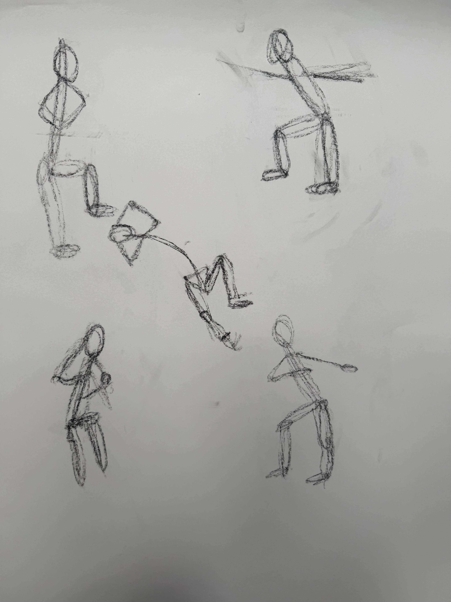
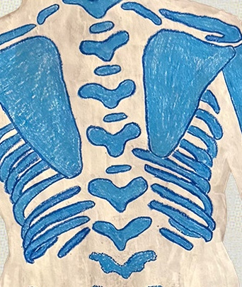
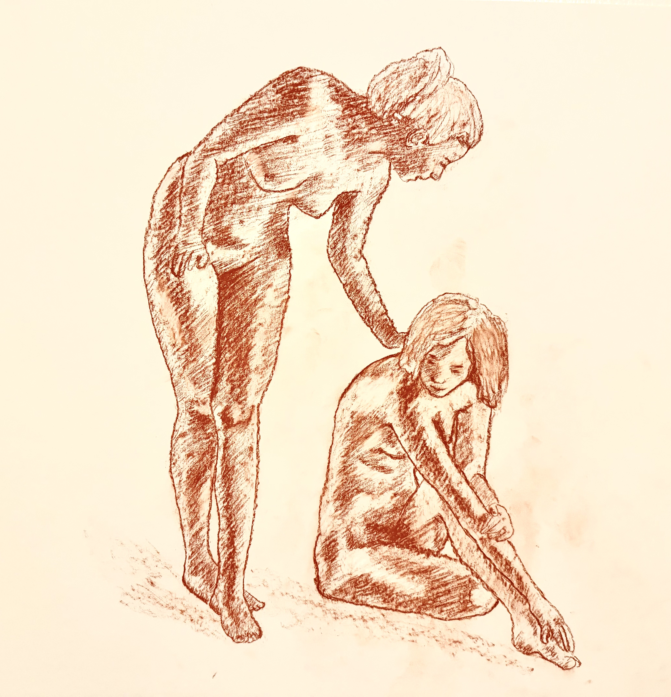

Torso
Thoracic and abdominal structure studies
Explore torso studies documenting the progression from gesture observation through skeletal framework to muscular anatomy. Each study preserves the marks of observation and anatomical investigation.
Featured Study: Torso Anatomical Mapping

Use the buttons above to explore different views and anatomical layers
Study Collection

Torso Study 01: Gesture Exploration

Torso Study 02: Anatomical Gesture

Torso Study 03: Multiple Perspectives

Torso Study 04: Structural Analysis

Torso Study 05: Light and Form

Torso Study 06: Seated Pose

Torso Study 07: Skull-Spine Connection

Torso Study 08: Ribcage Overlay

Torso Study 09: Figure Composition